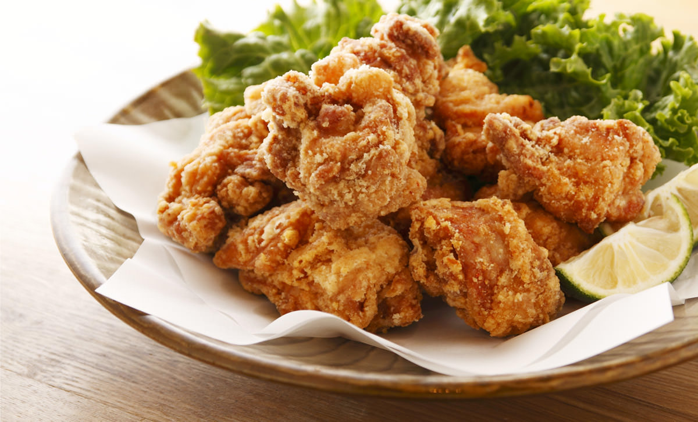
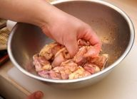

< Karāge 唐揚げ >

< Ingredients 2 Servings>
- 2 Chicken Breast or Chicken Thigh
- ★ 2 Tsp. of Soy Sauce
- ★ 1 Tsp. of Cooking White Wine
- ★ 1/2 Tsp. of Salt
- ★ Small ammount of Ginger
- Cornstarch
- All Purpose Flour
< Directioins >
- Cut the chicken into small pieces. Marinate with the ★ ingredients. Let it sit for 10~60 minutes.

- Put cornstarch and all purpose flour with 1:1 ratio into the marinated chicken, and Mix it.

- Deep fly the chicken with 170 degree Celsius oil. Ready to serve when chicken turn into golden brown!

< Tips >
- Good to note that when chicken is 300g, the cornstarch will be 3 Tbsp. and all purpose flour will be 3 Tbsp. When chicken is 400g, the cornstarch will be 4 Tbsp. and all purpose flour will be 4 Tbsp.